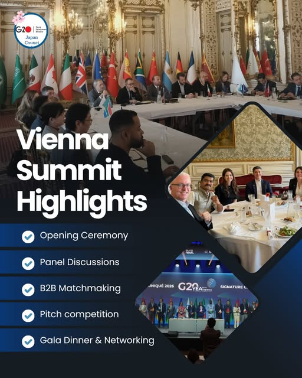
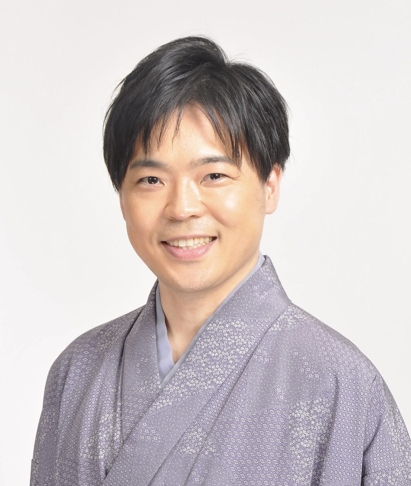

01
政策提言
各国の若手起業家が直面する課題や成功事例を共有し、G20首脳に対して若者や起業家精神の育成に関する政策提言を行います。

G20 YOUNG ENTREPRENEURS’ ALLIANCE — JAPAN
G20の若手起業家のグローバルネットワーク
G20各国をはじめとして、様々な業種の起業家が社会への行動と新たな出会いを求めて集まっています。
G20各国はもちろんのこと、今後の成長が期待される国々からも多くの起業家が参加しています。
フォーブス・グローバル2000にリストアップされる企業もG20YEAの行動に賛同し、協力を表明しています。
ABOUT G20YEA
G20YEA（Young Entrepreneurs’ Alliance）とはG20加盟国の若手起業家で構成される団体です。
G20YEAは、G20の目的である国際的な経済問題への対処、金融の安定、気候変動対策、持続可能な開発といった主要な課題に対し、若手起業家の視点から貢献することを目指しています。
G20に参加する19カ国とEU、AUは、世界のGDPの約85%、国際貿易の75%、世界人口の56%、そして世界の陸地面積の60%を占めています。EUとAUを含めると、世界の人口の78.9%、化石燃料による世界のCO2排出量の83.9%を占めています。
ROLE
世界経済の大部分を占めるG20諸国の若手起業家が集まることで、以下の点で重要な役割を担っています。
各国の若手起業家が直面する課題や成功事例を共有し、G20首脳に対して若者や起業家精神の育成に関する政策提言を行います。
世界中の若手起業家が交流し、新たなビジネスチャンスやイノベーションを生み出すためのネットワークを構築します。
気候変動や持続可能な開発といった地球規模の課題に対し、起業家ならではの視点と行動力で解決策を探り、貢献します。
G20YEAサミットで行われるフォーラムやトレーニングでグローバルなビジネスに携わる人材育成を行なっています。
主な事業
毎年1回開催
総会・勉強会（国際投資、国際展開など）の開催（年2回程度）
G20YEA China等が開催する関連事業への参加
加盟国の企業とのネットワーキングを目的とした国別訪問
国際的なビジネスチャンスのある地域への訪問
RECENT ACTIVITIES

開会式、パネルディスカッション、B2Bマッチング、ピッチコンペ、ガラディナーなど多彩なプログラム。B2Bマッチングでは新たに業種別マッチングが導入されました。
続きを見る
2026年7月20日、Futurpreneurにて開幕。朝食ミーティング、大臣を迎えたパネルディスカッション、現地商工会議所とのネットワーキングを実施しました。
続きを見る
交流会後半は、職人によるライブ寿司パフォーマンスとともに懇親。エネルギー、AI、医療、不動産、物流、製造業など多様な業種の経営者が語り合いました。
続きを見るMEMBERS





エネルギー、金融、医療、不動産、貿易、専門サービスなど、日本各地の経営者がメンバーとして活動しています。
世界の若手起業家とつながる。入会のお申し込み・お問い合わせはこちらから。